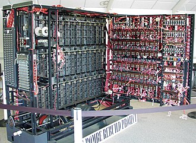
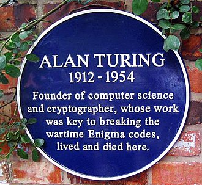

Enfance
Alan Turing est né à Maida Vale (quartier de Londres) du fonctionnaire d'administration coloniale Julius Mathison Turing (9 novembre 1873 – 3 août 1947) et de sa femme Ethel Sarah Turing (née Stoney le 18 novembre 1881 à Coimbatore et morte le 6 mars 1976, fille d'un ingénieur en chef à la Compagnie Madras Railway). À partir de l'âge d'un an, le jeune Alan est élevé en Grande-Bretagne par des amis de la famille Turing, car sa mère a rejoint son père qui était en fonction dans l’Indian Civil Service. Ils reviennent au Royaume-Uni à la retraite de Julius en 1926. Très tôt, le jeune Turing montre les signes de son génie. On relate qu'il apprit seul à lire en trois semaines. De même, il montra une affinité précoce pour les chiffres et les énigmes.
Ses parents l'inscrivent à l'école St. Michael's à l'âge de sept ans. La directrice reconnaît rapidement son talent, comme beaucoup de ses professeurs au cours de ses études au Marlborough College, sans que cela n'ait guère d'influence sur sa carrière scolaire. À Marlborough, l'enfant solitaire et introverti est confronté pour la première fois à des camarades plus âgés que lui et devient l'une de leurs têtes de turc. À 13 ans, il rejoint la Sherborne School. Son premier jour de classe ne passe pas inaperçu, la presse locale en rendant même compte : le jour de la rentrée est celui de la grève générale de 1926, mais le jeune Turing, décidé envers et contre tout à faire sa rentrée, parcourt pour ce faire seul à bicyclette les 90 km qui séparent son domicile de son école, s'arrêtant même pour la nuit dans un hôtel.
Le penchant de Turing pour les sciences ne lui apporte le respect ni de ses professeurs, ni des membres de l'administration de Sherborne, dont la définition de la formation mettait plus en valeur les disciplines classiques (littérature, art, culture physique) que les sciences. Malgré cela, Turing continue de faire des prouesses dans les matières qu'il aime, résolvant des problèmes très ardus pour son âge. En 1928, il découvre les travaux d'Albert Einstein et comprend, alors qu'il a à peine 16 ans, qu'ils remettent en cause les axiomes d'Euclide et les lois de la mécanique céleste de Galilée et Newton, à partir d'un texte de vulgarisation où ses conséquences ne sont pas indiquées explicitement.
À la Sherborne School, Turing se lie en 1927 d'une grande amitié avec son camarade Christopher Morcom, passionné de sciences et de mathématiques comme lui qui a été décrit comme le "premier amour" de Turing. Quand Morcom meurt en février 1930 des complications de la tuberculose bovine contractée après avoir bu du lait de vache infecté, Turing, bien que matérialiste et athée, n'admet pas la disparition complète d'un esprit aussi brillant. Persuadé que l'esprit de Morcom continue à exister, il décide d'incarner le destin scientifique qu'aurait dû avoir Morcom.
Études supérieures et travaux sur la calculabilité

La salle informatique du King's College, à Cambridge, porte désormais le nom de Turing.
Sa préférence pour les matières scientifiques fait échouer Turing à plusieurs reprises à ses examens, faute d'effort dans les matières classiques. Il n'est admis qu'au King's College de l'université de Cambridge, alors qu'il avait demandé Trinity College en premier choix. Il étudie de 1931 à 1934 sous la direction de Godfrey Harold Hardy, mathématicien alors titulaire de la chaire sadleirienne puis responsable du centre de recherches et d'études en mathématiques. Il suit également les cours d'Arthur Eddington et, la dernière année, de Max Newman qui l'initie à la logique mathématique. En 1935, Turing est élu fellow du King's College, l'équivalent d'une bourse de thèse, grâce à sa démonstration du théorème central limite.
En 1928, l'Allemand David Hilbert énonce le problème de la décision — connu sous le nom allemand d'« Entscheidungsproblem ». Pour cela il se place dans les théories axiomatiques et demande s'il est possible de trouver une méthode « effectivement calculable » pour décider si une proposition est démontrable. Pour résoudre ce problème, il faut caractériser ce qu'est un procédé effectivement calculable. C'est ce que fait Turing dans son remarquable article de 1936, « On Computable Numbers, with an Application to the Entscheidungsproblem », en imaginant, non une machine matérielle, mais un « être calculant », qui peut être indifféremment un appareil logique très simple ou un humain bien discipliné appliquant des règles — comme le faisaient les employés des bureaux de calcul ou les artilleurs à l'époque. Dans le cours de son raisonnement, il démontre que le problème de l'arrêt d’une machine de Turing ne peut être résolu par algorithme : il n’est pas possible de décider avec un algorithme (c’est-à-dire avec une machine de Turing) si une machine de Turing donnée s’arrêtera. Bien que sa preuve ait été publiée après celle d'Alonzo Church, le travail de Turing est plus accessible et intuitif. Il est aussi complètement nouveau dans sa présentation du concept de « machine universelle » (de Turing), avec l'idée qu'une telle machine puisse accomplir les tâches de n'importe quelle autre machine. L'article présente également la notion de nombre réel calculable. Il déduit de l'indécidabilité du problème de l'arrêt que l'on peut définir des nombres réels qui ne sont pas calculables. Il introduit les concepts de programme et de programmation.
Turing passe la plus grande partie de 1937 et de 1938 à travailler sur divers sujets à l'université de Princeton, sous la direction du logicien Alonzo Church qui a déjà encadré les travaux de Stephen Kleene sur la récursivité et de John Rosser sur le lambda-calcul. Il obtient en mai 1938 son Ph. D. de l'université de Princeton ; son manuscrit présente la notion d'hypercalcul, où les machines de Turing sont complétées par ce qu'il appelle des oracles, autorisant ainsi l'étude de problèmes qui ne peuvent pas être résolus de manière algorithmique. Church emploie pour la première fois l'expression « machine de Turing » dans le compte rendu de la thèse de son élève dans le Journal of Symbolic Logic.
Turing obtient des résultats importants sur le lambda-calcul, notamment en montrant son équivalence avec son propre modèle de calculabilité, en inventant le combinateur de point-fixe qui porte son nom et en proposant la première démonstration de la normalisation du lambda calcul typé.
De retour à Cambridge en 1939, il assiste à des cours publics de Ludwig Wittgenstein sur les fondements des mathématiques. Tous deux discutent avec véhémence et constatent leur désaccord, Turing défendant le formalisme alors que Wittgenstein pense que les mathématiques sont surestimées et qu'elles ne permettent pas de découvrir une quelconque vérité absolue.
Cryptanalyse
Selon plusieurs historiens, le travail de Turing pour déchiffrer le code des transmissions allemandes permit de raccourcir la Seconde Guerre mondiale de deux ans.
Fin 1938, après les accords de Munich, la Grande-Bretagne comprend le danger du nazisme, et développe ses armements. Turing fait partie des jeunes cerveaux appelés à suivre des cours de chiffre et de à la Government Code and Cypher School (GC&CS). Juste avant la déclaration de guerre, il rejoint le centre secret de la GC&CS à Bletchley Park. Il y est affecté aux équipes chargées du déchiffrage des messages codés avec les machines Enigma utilisées par les forces armées allemandes. Ce travail profite initialement des percées effectuées par les services secrets polonais du Biuro Szyfrów et du renseignement français au PC Bruno, que Turing visite entre décembre 1939 et les premiers mois de 1940 et d'où il rapporte des copies des feuilles de Zygalski. Mais, en mai 1940, les Allemands perfectionnent leur système cryptographique. Turing participe aux recherches qui permettent de pénétrer les réseaux de l'armée de terre et de l'aviation. Il conçoit des méthodes mathématiques et des versions améliorées de la « Bombe » polonaise, machine électromécanique permettant d'essayer rapidement des ensembles de clés potentielles sur des blocs de communication d'Enigma. Une fois l'affaire lancée, Turing prend la tête de l'équipe chargée de trouver les clés bien plus hermétiques des réseaux de l'Enigma navale. Ces percées décisives redonnent à la Grande-Bretagne un avantage temporaire dans les batailles d'Angleterre, de Libye et de l'Atlantique.
Jusqu'au milieu des années 1970, seuls quelques anciens cryptanalystes français et polonais avaient publié quelques informations sur la lutte contre Enigma dans leurs pays respectifs ; les capacités de décryptage de Bletchley Park et l'opération Ultra restaient un secret militaire absolu en Grande-Bretagne. Puis les autorités britanniques déclassifièrent progressivement les techniques de décryptage d'Enigma jusqu'à 2000.
Codage de la voix
Turing part en 1943 pour les États-Unis, en mission de liaison avec les cryptanalystes américains. Il y découvre les progrès des technologies électroniques et conçoit une machine à coder la voix, ayant pour nom de code « Delilah ». Il contribue à de nombreuses autres recherches mathématiques, comme celles que menait William Tutte qui aboutira à casser le code généré par le téléscripteur de Fish construit par Lorenz et Siemens en partenariat. Cette nouvelle machine allemande, réservée au chiffrement des communications d'états-majors, est très différente du système Enigma et résiste longtemps aux attaques des cryptanalystes alliés. Ceux-ci parviennent finalement à percer les codes Fish, grâce à de nouvelles méthodes mathématiques et à de nouvelles machines, Heath Robinson puis Colossus. Cette machine, le premier grand calculateur électronique de l'histoire, fut conçue par Max Newman et construite au laboratoire de recherche des Postes de Dollis Hill par une équipe dirigée par Thomas Flowers en 1943. Contrairement à une légende, Turing n'a nullement participé à la conception de Colossus. Mais il l'a vu fonctionner, ce qui a certainement contribué à orienter Turing vers la conception d'un ordinateur après la guerre.
Cryptanalyse d'Enigma
À partir de septembre 1938, Turing travaille à temps partiel pour la Government Code and Cypher School (GC&CS). Avec le concours d'un expert en cassage de codes, Dilly Knox, il se concentre sur la cryptanalyse d'Enigma. Peu après une rencontre à Varsovie (juillet 1939) où le bureau polonais du chiffre explique aux Français et aux Britanniques le câblage détaillé des rotors d'Enigma et la méthode polonaise de décryptage des messages associés, Turing et Knox se mettent au travail sur une approche moins spécifique du problème. En effet, la méthode polonaise était fondée sur le décryptage de la clef répétée au début du message, mais cette répétition était susceptible d'être supprimée, car trop vulnérable, ce qui arriva en mai 1940. Tenus à l'écart de Bletchley Park, les cryptanalystes polonais réfugiés en Grande-Bretagne seront affectés au décryptage de codes mineurs, tandis que les services secrets français continueront à transmettre clandestinement des informations aux Alliés.
Plus générale, l'approche de Turing transforme la cryptanalyse, de technique élaborée qu'elle était depuis longtemps, en une branche des mathématiques. Il ne s'agit plus de deviner un réglage choisi parmi 159 milliards de milliards de réglages disponibles, mais de mettre en œuvre une logique fondée sur la connaissance du fonctionnement interne de la machine Enigma et d'exploiter les imprudences des chiffreurs allemands, afin de déduire le réglage de toutes les machines Enigma d'un réseau particulier pour la journée : disposition initiale des rotors (parmi 80 dispositions initiales disponibles), réglage initial des rotors (parmi 336 réglages initiaux disponibles), permutations des fiches du tableau de connexions (parmi 17 500 enfichages disponibles), etc. C'est alors que Turing rédige la première spécification fonctionnelle d'une nouvelle « bombe », machine électromécanique capable d'abattre quotidiennement le travail de dix mille personnes.
La spécification de cette « bombe » est le premier des cinq progrès majeurs dus à Turing pendant la durée de la guerre. Les autres sont la procédure d'identification par déduction de la clef quotidienne des différents réseaux de la Kriegsmarine, le développement d'une procédure statistique d'amélioration de l'efficacité des bombes (Banburismus), le développement d'une procédure (« Turingerie ») de déduction des réglages des roues de la machine Lorenz SZ 40/42 et enfin, vers la fin de la guerre, le développement d'un brouilleur de radiophonie.
Turing et Knox mènent leurs travaux à Bletchley Park, principal site du décryptage du Royaume-Uni, le Government Code and Cypher School (GC&CS). Durant le printemps 1941, Alan se rapproche de Joan Clarke, une des rares femmes cryptologues à Bletchley Park. Malgré un amour platonique qui ne dépasse jamais l'amitié, il se fiance avec elle par devoir social, car les parents de Clarke lui demandent de se marier. Turing rompt les fiançailles durant l'été après lui avoir révélé son homosexualité. Malgré cela, leurs relations restent excellentes.
En utilisant certaines techniques statistiques en vue d'optimiser l'essai des différentes possibilités du processus de décryptage, Turing apporte une contribution novatrice. Deux documents qu'il rédige alors (un Rapport sur les applications de la probabilité à la cryptographie et un Document sur la statistique des répétitions) ne seront déclassés et remis aux National Archives du Royaume-Uni qu'en avril 2012.
La bombe de Turing, Welchman et Pendered
Quelques semaines à peine après son arrivée à Bletchley Park, Turing rédige les spécifications d'une machine électromécanique plus efficace que la bomba polonaise. La capacité de la bombe de Turing est doublée, grâce à un autre mathématicien de Cambridge, Gordon Welchman. Encore améliorée par un espoir de Cambridge, Richard Pendered, la bombe, une fois fabriquée par les ingénieurs de la British Tabulating Company, est alors l'outil fondamental le plus automatisé capable de décrypter les messages chiffrés par Enigma.
Au moyen d'un fragment probable de texte en clair, la bombe recherche les réglages corrects possibles utilisés pour 24 heures par chaque réseau allemand (ordre des rotors, réglages des rotors et enfichage du tableau de connexions). Pour chaque réglage possible des rotors, la bombe effectue électriquement une chaîne de déductions logiques fondées sur les mots probables. À chaque occurrence d'une contradiction, la bombe écarte ce réglage et passe au suivant. La plupart des réglages essayés provoquent des contradictions, ils sont alors rejetés et ceux qui restent, peu nombreux, sont alors examinés de près.
Pendant presque toute la durée de la guerre, ce procédé permet de déchiffrer une grande partie des messages Enigma de la Luftwaffe dont les chiffreurs multiplient les négligences. Comme l'aviation coopère étroitement avec les deux autres armées (mer et terre), la GC&CS obtient par ce biais des renseignements sur l'ensemble des activités de la Wehrmacht. Cependant, l'interprétation des messages une fois déchiffrés pose souvent de tels problèmes à l'état-major qu'ils ne peuvent être qu'en partie exploités. Ce sera le cas du plan d'invasion de la Crète.
La Hut 8 et l'Enigma navale
Affecté à la hutte 8 (bâtiment préfabriqué no 8), Turing décide de traiter un problème autrement difficile, la cryptanalyse d'Enigma navale, « parce que personne d'autre ne s'en occupait et que je pouvais l'avoir pour moi tout seul ». La même nuit, il conçoit le Banburismus (en), technique statistique appelée plus tard analyse séquentielle par Abraham Wald, dans l'espoir de percer l'Enigma navale : « Pourtant je n'étais pas sûr que cela marcherait en pratique ». Dans cette idée, il invente une mesure de poids de la preuve qu'il baptise le « Ban ». Les Banburismes peuvent écarter certaines séquences des rotors Enigma, c'est un gain de temps important. Cependant, les chiffreurs de la Kriegsmarine, en particulier les sous-mariniers, appliquent sans failles toutes les consignes de sécurité. Les messages de l'Enigma navale ne sont décryptés que pendant les périodes couvertes par les manuels ou grâce aux feuilles de bigrammes capturés par les Alliés.
En novembre 1942, Turing se rend aux États-Unis où, avec des cryptanalystes de l'US Navy, il travaille sur l'Enigma navale et à la conception de « bombes électromécaniques ». À Dayton (Ohio), il visite l'United States Naval Computing Machine Laboratory. Les « bombes » à l'américaine n'éveillent pas son enthousiasme. Pourtant, c'est l'extraordinaire puissance de la combinaison des centaines de « bombes » construites grâce aux moyens de l'industrie américaine qui, finalement, permet de percer à nouveau les secrets d'Enigma, spécialement ceux de la Kriegsmarine et des U-Boot. À partir de la fin 1943, les sous-marins allemands auront été pour l'essentiel soit détruits, soit chassés de l'Atlantique-Nord par la puissance des marines de guerre alliée, combinant les renseignements d'origine Ultra, les reconnaissances aéronavales, la détection par radar, par écho-sondeur ASDIC, la localisation par radiogoniométrie, et bien entendu grâce au nombre des navires engagés et à l'endurance des marins.
En mars 1943, Turing revient à Bletchley Park. En son absence, son adjoint Hugh Alexander avait officiellement pris la fonction de directeur de la Hut 8, qu'il avait de fait toujours exercée, Turing n'ayant pas d'intérêt pour la direction. Turing devient consultant en cryptanalyse au profit de l'ensemble de la GC&CS. À propos du rôle de Turing, Alexander dit :
« Il n'est pas permis de douter que les travaux de Turing fussent le facteur le plus important du succès de la Hut 8. Au départ, il fut le seul cryptographe à penser que le problème valait d'être abordé et non seulement lui revient le mérite de l'essentiel du travail théorique de la Hut 8, mais encore il partage avec Gordon Welchman et Harold Keen le mérite de l'invention de la bombe électromécanique. Il est toujours difficile de dire que tel ou tel est absolument indispensable, mais si quelqu'un fut indispensable à la Hut 8, ce fut Turing. Le travail de pionnier tend toujours à être oublié quand par la suite tout paraît plus facile, sous l'effet de l'expérience et de la routine. »
Travail sur les premiers ordinateurs
En 1945, pendant son séjour à Ebermannstadt, les deux bombes atomiques américaines sont lâchées sur Hiroshima et Nagasaki et il n’en est pas surpris : il connaissait, depuis son voyage secret aux États-Unis de 1942-1943, l'existence du projet à Los Alamos dans des proportions non encore élucidées.
De 1945 à 1947, il travaille au National Physical Laboratory, situé à Teddington au Royaume-Uni. Fin 1945, après avoir lu le rapport von Neumann qui décrit la structure générale d'un ordinateur et discute des méthodes de programmation, Turing rédige ce qui est sans doute le premier projet détaillé d'un ordinateur : l'ACE (Automatic Computing Engine). Toutefois, il ne parvient pas à s'entendre avec les ingénieurs électroniciens du NPL chargés de construire cette machine, qui soulèvent des objections techniques et préfèrent commencer par un prototype plus modeste. Le projet rencontre d'ailleurs des obstacles administratifs et budgétaires. Turing, trop individualiste pour être un organisateur ou un grand négociateur, préfère partir en 1947 suivre des cours de biologie à Cambridge. À la rentrée 1948, il est appelé par Max Newman, son ancien professeur de logique à Cambridge et collègue à Bletchley Park, à l'université de Manchester où Max Newman, inspiré lui aussi par le rapport von Neumann, dirige le développement de l'un des tout premiers véritables ordinateurs : Manchester Mark I, industrialisé ensuite par la firme Ferranti. Turing devient directeur adjoint du laboratoire de calcul de l'université de Manchester (titre sans grande signification), et travaille à la programmation de l'ordinateur.
Lors de la conférence marquant l'inauguration de l'ordinateur EDSAC, à Cambridge, il présente une méthode de preuves de correction de programmes fondée sur des assertions qui préfigure la méthode connue sous le nom de « méthode de Floyd-Hoare ».
Sportif accompli, en 1948, Turing termine quatrième au marathon de l'Association des athlètes amateurs (AAA Marathon, dont les meilleurs coureurs sont généralement qualifiés pour les Jeux olympiques) en 2 h 46 min 3 s, un très bon temps. Blessé à une jambe, Turing cessera de courir intensivement en 1950.
Vers l'intelligence artificielle : le test de Turing
Alan Turing continue parallèlement ses réflexions fondamentales réunissant la science et la philosophie. Dans l'article « Computing Machinery and Intelligence » (Mind, octobre 1950), Turing explore le problème de l'intelligence artificielle et propose une expérience maintenant connue sous le nom de test de Turing, où il tente de définir une épreuve permettant de qualifier une machine de « consciente » ; Turing fait le « pari que d'ici cinquante ans, il n'y aura plus moyen de distinguer les réponses données par un homme ou un ordinateur, et ce sur n'importe quel sujet ».
En mai 1952, Turing écrit un programme de jeu d'échecs. Ne disposant pas d'un ordinateur assez puissant pour l'exécuter, il simule les calculs de la machine, mettant environ une demi-heure pour effectuer chaque coup. Une partie est enregistrée, où le programme perd contre un collègue de Turing. Le code original écrit par Turing et Champernowne n'a pas été conservé. En juin 2012, une version du programme est recréée sous le nom Turochamp pour disputer une partie exhibition contre Garry Kasparov.
Le programme de Joe Weizenbaum, ELIZA, écrit en 1966 et qui ne prend pas plus de trois pages de langage SNOBOL, sera le premier à donner l'illusion pendant quelques minutes de satisfaire au test de Turing.
Morphogenèse
En 1952, Turing s'est intéressé à une autre branche des mathématiques : l'analyse, et, à partir de l'équation de réaction-diffusion, a élaboré un modèle biomathématique de la morphogenèse, tant chez l'animal que chez le végétal. Il fait paraître un article, « The Chemical Basis of Morphogenesis » (Philosophical Transactions of the Royal Society , août 1952), où il propose trois modèles de formes (Turing patterns). Dans les années 1990, des expériences de chimie et de critallographie viendront confirmer expérimentalement les modèles théoriques de Turing.
Condamnation
De Cambridge à Bletchley Park, Turing ne faisait aucun mystère de son orientation sexuelle ; ouvertement homosexuel, il ne cachait pas ses aventures. Il était d'ailleurs loin d'être le seul. En 1952, sa maison de Manchester est cambriolée. Turing porte plainte. Arrêté, le cambrioleur dénonce le complice qui lui avait indiqué l'affaire, un ex-amant occasionnel de Turing. Celui-ci ne nie pas cette ancienne relation. Tous deux sont inculpés d'« indécence manifeste et de perversion sexuelle », grossière indécence d'après la Criminal Law Amendment Act (1885). Quelques années plus tôt, ce n'aurait été qu'un fait divers. Mais, au début des années 1950, une affaire retentissante d'espionnage scientifique au profit de l'Union soviétique où sont impliqués des intellectuels anglais homosexuels, certains faisant partie des Cinq de Cambridge, a rendu les services de contre-espionnage britanniques et américains sensibles à un profil comme celui de Turing.
Le procès est médiatisé. Hugh Alexander fait de son confrère un brillant portrait, mais il est empêché de citer ses titres de guerre par le Secret Act. Turing est mis en demeure de choisir : incarcération ou castration chimique réduisant sa libido. Il choisit le traitement, d'une durée d'un an, avec des effets secondaires temporaires (le coureur à pied svelte qu'il était grossit, devient impuissant, sa poitrine se développe...), et surtout des effets psychiques profondément démoralisants. Alors qu'il a été consacré, en 1951, en devenant membre de la Royal Society, à partir de 1952 il est écarté des plus grands projets scientifiques. Toutefois, en avril 1953, la « cure » se termine, ses effets s'estompent et Turing recommence à faire des projets de recherche, de voyages en France et en Méditerranée.
Mort
Le 8 juin 1954, dans l'après-midi, Turing est retrouvé par sa gouvernante mort dans son lit, avec une pomme croquée sur sa table de nuit. L'autopsie conclut à un suicide par empoisonnement au cyanure, même si sa mère tenta d'écarter cette thèse. Le moyen d'ingestion du poison aurait été cette pomme qu'il aurait partiellement mangée (une légende tenace et démentie y voit l'origine du logo de la firme Apple), et qui aurait été préalablement imbibée de cyanure ; il n'existe pas de certitude à cet égard, la pomme n'ayant pas été analysée.
Le biographe de Turing, Andrew Hodges, a émis l'hypothèse que Turing aurait choisi ce mode d'ingestion précisément afin de laisser à sa mère la possibilité de croire à un accident, sachant que les pépins de pomme contiennent naturellement du cyanure mais en quantité trop faible cependant pour avoir un effet toxique. Certains ont remarqué le lien entre sa méthode présumée de suicide et le film Blanche-Neige et les Sept Nains, dont il avait particulièrement apprécié la scène où la sorcière empoisonne la pomme, au point de chantonner régulièrement les vers prononcés par celle-ci : « Plongeons la pomme dans le chaudron, pour qu'elle s'imprègne de poison ».
Toutefois, Jack Copeland, spécialiste de Turing, estime que la mort de celui-ci est accidentelle. Il avance les arguments suivants : Turing ne montrait aucun signe de dépression et, peu avant sa mort, avait noté des projets par écrit ; il avait l'habitude de faire des expériences chimiques et détenait du cyanure à cette fin ; il lui arrivait d'être imprudent dans ces expériences, goûtant par exemple des produits pour les identifier. Il aurait pu également inhaler accidentellement une solution cyanurée qu'il utilisait pour dissoudre de l'or ; c'est de cette façon que, pour Copeland, il aurait ingéré ou inhalé une dose mortelle de cyanure.
Dans la culture populaire, l'idée erronée qu'il se soit suicidé en raison de la répression de son homosexualité a été diffusée par Richard Dawkins. Cette thèse n'est soutenue par aucun expert d'Alan Turing, comme Jack Copeland ou Andrew Hodges.